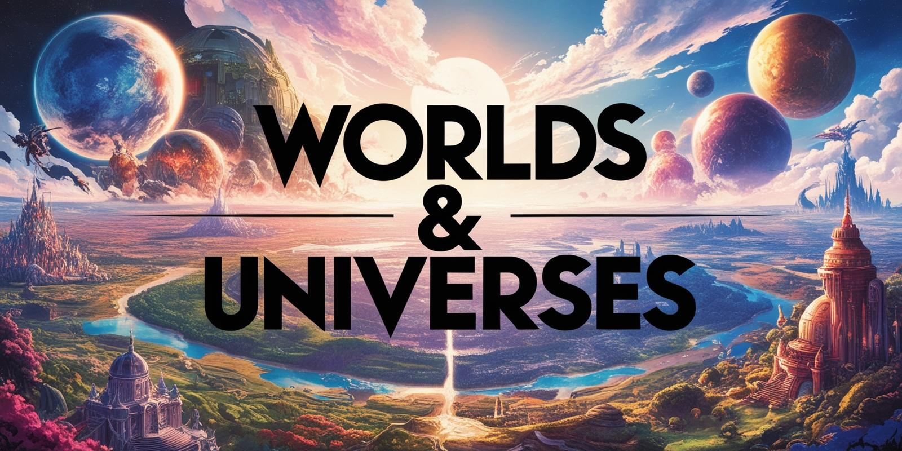

Brief Intro
Filler words and stuff, This topic is a bit more nuanced then just a show topic or something of the sorts..

Filler words and stuff, This topic is a bit more nuanced then just a show topic or something of the sorts..
A sentence or two about what Backstory and lore is and why someone would want to read them.
maybe this is where the list should go for categories of worlds and such.